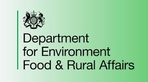

Market analysis, business modellinhg, financial forecasting, location planning.
Site layout, system design, climate control including lighting, automation and workflow optimisation
Crop planning, labour modelling, performance monitoring.
Evaluation and implenetation of hardware, software and automation systems.
Energy and power reduction strategies, carbon audit service, as provided by KPMG
Operational training, advisory SERVICES??? , workshops and seminars.

SUNFARM Consulting is proud to offer sustainability auditing and reporting services to vertical farms across the UK. Our team of experts can help you assess your farm's environmental impact, identify areas for improvement, and develop strategies to reduce your carbon footprint. We can also provide guidance on how to implement sustainable practices, such as energy-efficient lighting and water-saving irrigation systems. With our help, you can not only improve your farm's sustainability but also enhance its profitability and reputation in the industry.